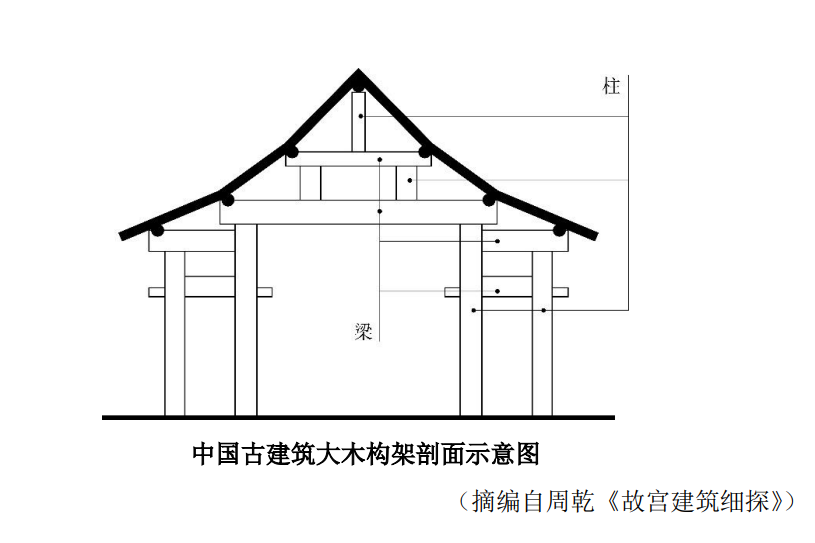

练习 · 实用类文本阅读
古建筑的“偷梁换柱”
理解古建筑原位换柱的方法及其受力原理。
导读
文体与题材：建筑技术说明文；主题为木构古建筑立柱修缮的原位替换方法。
作者与出处：材料摘编自周乾《故宫建筑细探》，选入2024年高考语文全国甲卷第4—6题。
内容脉络：文章先释梁柱受力关系，再写立柱损坏和临时支撑、抽换新柱的步骤，最后从梁、柱和整体结构三个方面解释稳定性。
内容主旨：“偷梁换柱”的关键是临时托梁并原位更换损坏立柱，使结构的受力、传力方式保持稳定。
阅读重点：把工程步骤与受力原理对应起来；将题中太和殿实例与另一种旁置新柱的做法比较。
原文
原文按结构分节；随文内容可定位至对应段落。
原文·释义：工程中的“偷梁换柱”是一种修缮方法。
①“偷梁换柱”多指以假代真，用欺骗的手段改变事物的性质，然而在古建筑工程领域，“偷梁换柱”却属于一种科学实用的修缮加固方法。
原文·构造：梁承重并向柱传力，柱继续向下传力。
②梁是截面形状一般为长方形的木料，且木料的长度尺寸远大于截面尺寸。梁为水平放置，两端的底部有支撑构件。梁主要用于承担建筑上部构件及屋顶的全部重量，并把这些重量向下传给支撑构件。柱为梁的支撑构件。柱子截面形状一般为圆形，长度尺寸远大于截面直径。柱子为竖向放置，主要用于承担上部梁传来的重量，并向下传递给下部的梁或直接传至地面。梁与柱采用榫卯形式连接，形成稳固的大木结构体系。位于屋架内的若干梁在竖向被层层往上“抬”，上下梁之间由短柱支撑，底部的梁由立于地面的立柱支撑。梁、柱均为中国木结构古建筑的核心受力、传力构件，缺一不可。
原文·操作：假柱托梁，抽换原柱后移去假柱。
③对于古建筑而言，立于地面的立柱，或因长期承受上部结构传来的重量而产生开裂残损，或因柱底部位长期受到地面潮气影响而出现糟朽残损，这导致木柱强度下降，无法正常支撑梁。此时可采用“偷梁换柱”的加固方法。“偷梁换柱”实际就是“托梁换柱”。其基本做法为：首先将“假柱”（即临时的竖向支撑构件）安装在梁底部、原柱（原有立柱）旁边；再抽去原柱，使梁传来的重量暂时由“假柱”承担；然后安装新柱，新柱的材料、尺寸及安装位置与原有立柱相同；最后将“假柱”移去。
原文·原理：梁、柱及整体构架在换柱期间保持稳定。
④完善的“偷梁换柱”加固方法具有科学性，其原理主要包括三个方面：其一，从梁的角度而言，它是水平受力构件，并把外力向下传给立柱。梁只有保持水平稳定状态，才能保证整个大木结构的稳定。在加固古建筑的过程中，梁始终受到支托，因而能一直保持水平稳定状态。其二，从柱的角度而言，它是竖向支撑构件，并最终把上部构件的重量传给地基。只有立柱具有充足的承载力，且与梁有可靠连接时，才能有效承担梁传来的作用力。加固过程中，技术人员虽然将原柱抽去，但是预先将“假柱”设置于原柱附近，让“假柱”代替原柱发挥支撑作用，因而换柱过程对结构整体的稳定基本无影响。换柱完成后，新柱与原柱有着同样的材料、尺寸，且与梁有着相同的可靠连接方式，它完全能够代替原柱发挥支撑作用。其三，从梁、柱整体结构角度而言，“偷梁换柱”方法对整体结构干扰小，且能达到良好的加固效果：原柱被新柱原位替换，新柱不仅有很好的支撑作用，而且与梁仍有可靠连接；“假柱”仅用于加固过程的临时支撑，且在原柱撤去后新柱安装前，能够与梁临时组成稳定的结构体系。因此，在“偷梁换柱”过程中，梁、柱结构整体始终处于稳定状态。
（摘编自周乾《故宫建筑细探》）

第1题 · 内容理解
下列对原文相关内容的理解和分析，不正确的一项是（）
A．“偷梁换柱”这一成语在现今的使用中多含有贬义的色彩，但在古建筑工程领域，它是指一种修缮加固的科学方法，完全没有贬义。
B．中国古建筑大木构架剖面示意图展示了几种不同位置、不同尺寸的柱，这些柱子中，立于地面的立柱比较容易发生糟朽残损的情况。
C．结合图文可以发现，屋顶的重量由上层柱承担，然后传给梁，再由梁传递给其下的短柱，依次向下传递，最终由底部的立柱传至地面。
D．“偷梁换柱”的加固方法包括托梁、抽柱、换柱等步骤，在每一个步骤中梁一直会得到很好的支撑，从而始终能够保持水平稳定状态。
参考答案1展开 / 收起
参考作答
C
文本分析
A项查看证据 ↗
开头明确区分成语常用义与古建修缮术语，选项转述成立。
B项查看证据 ↗
原文说明地面立柱长期承重、柱底受潮，可能产生开裂或糟朽；选项结合示意图所指位置作合理判断。
C项查看证据 ↗
原文说“梁主要用于承担建筑上部构件及屋顶的全部重量，并把这些重量向下传给支撑构件”；选项误将屋顶重量首先交由柱承受，颠倒了梁柱传力次序。
D项查看证据 ↗
技术步骤先以假柱托梁，再抽去原柱并安新柱，因此梁一直获得支撑；选项与方法原理一致。
知识点
把材料中的具体表述转化为可检验的判断，保持概念、条件与结论之间的对应。相关研习：文本证据与阅读推论、信息转述与判断范围。
第2题 · 语句补写
请根据原文内容，在下面文段的横线处补写出恰当的词语。
工程实例：故宫太和殿是我国最大的木构大殿，明清两代帝王即位或节日庆典都在此举行。2004年，技术人员在对太和殿进行勘查时，发现有一根立柱下部三分之一的位置出现了严重糟朽，于是采取了“偷梁换柱”的方法对该立柱进行加固。具体过程如下：先使用“假柱”托住原柱上部的梁。“假柱”为完好的木料，被安装在①________附近，用于临时支撑梁。再把柱子底部糟朽部分抽去，以便用②________代替。原柱糟朽部分去掉后，剩余的部分做成巴掌形，与新柱搭接。新柱与被抽去的糟朽部分同材料、同形状、同尺寸，且顶部亦做成巴掌榫形状。最后再把③________拆除，即完成了原有立柱的加固。
参考答案2展开 / 收起
参考作答
①原柱。
②新柱。
③“假柱”。
文本分析
第1步查看证据 ↗
据原文“安装在梁底部、原柱旁边”，确定①为“原柱”；再由“安装新柱”确定②。
第2步查看证据 ↗
“假柱”只承担临时支撑，完成原位替换后应拆除，故③为“假柱”。
知识点
把材料中的具体表述转化为可检验的判断，保持概念、条件与结论之间的对应。相关研习：文本证据与阅读推论、信息转述与判断范围。
第3题 · 方案比较
清代的古籍中有另一种“偷梁换柱”的记载：当某根立柱损坏需要更换时，为节省工料，工匠只是在原柱旁边设一根新柱，再撤去原柱。为什么上题“工程实例”中，太和殿修缮没有采用这种更简便的加固方式呢？请简要分析。
参考答案3展开 / 收起
参考作答
受力稳定性：旁置新柱不在原柱位置，可能改变梁柱原有的受力与传力关系；太和殿实例采用临时假柱托梁、原位安新柱，使构架持续稳定。
建筑原有布局：太和殿是重要木构大殿，原有立柱位置与整体构架相适应；在原位更换损坏部分，更能保持既有结构的受力布局。
文物保护要求：太和殿修缮应尽量保持原有结构形式与外观；旁置新柱会改变原立柱的位置关系，节省工料不能优先于保护原貌。
文本分析
第1步查看证据 ↗
比较两种方法中“新柱”的安装位置：一在原位，一在旁边；由原文“原位替换”“整体始终处于稳定状态”推出力学差异。
第2步查看证据 ↗
结合题干“故宫太和殿”这一文物保护情境，说明工料节省和原貌保存的取舍；不以未经证实的施工细节代替文本推论。
知识点
把材料中的具体表述转化为可检验的判断，保持概念、条件与结论之间的对应。相关研习：文本证据与阅读推论、信息转述与判断范围。
参考文献
2024年高考语文全国甲卷原卷，现代文阅读第4—6题；周乾《故宫建筑细探》。教育部教育考试院的2024年全国高考语文试题评析说明了该题组的选材与考查方向。